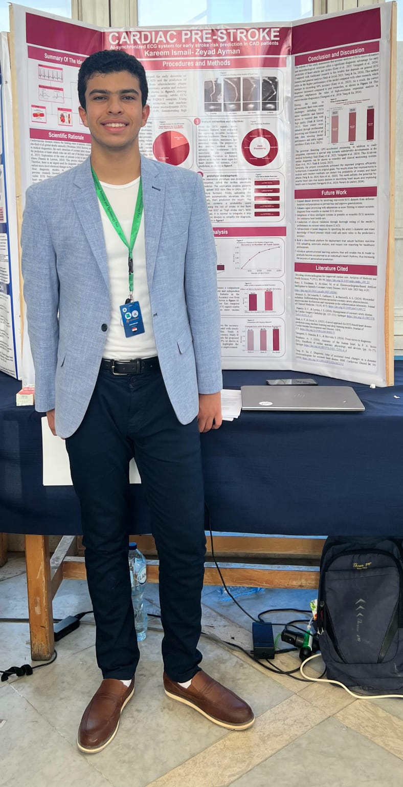

Authors: Kareem Ismail – Zeyad Ayman
Summary of The Idea:
This project constitutes a fully integrated AI-driven system capable of extracting highly sensitive micro-dynamic repolarization from ECG records with personalized beat segments. By combining QT variability and rapid instability indices, the system establishes an automated framework for early cardiac-risk detection.
Cardiovascular diseases are a leading cause of death globally. Early detection is critical.
High-risk changes often manifest as "micro-dynamic" variations not visible to the human eye.
Standard ECG fails to capture "spatial" indoctrination features required for accurate prediction.
ECG signals collected from multiple clinical databases to ensure diverse and unbiased data.
Raw ECG signals are cleaned, filtered, normalized, and segmented into fixed windows.
Trained on 80/20 split optimizing LightGBM and XGBoost.
The hardware setup uses an ECG sensor connected to an Arduino board to capture real-time heart signals. The device preprocesses the signal and sends it to the mobile app.
(Continuous monitoring suitable for wearable form factor)
A dedicated doctor analysis application was developed to review patient ECG uploads. The app processes the file through the AI model, generating micro-dynamics features and a detailed cardiac risk report.
Accuracy
Sensitivity
Specificity
The model successfully separated normal and micro-abnormal ECGs, identifying early pre-stroke risk patterns.
AI Engineer

Data Scientist